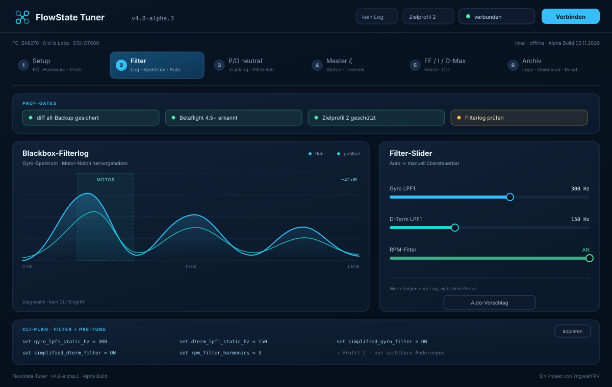

01
Aus Logs werden Werte
FlowState Tuner
Liest Blackbox- und Dataflash-Logs, rechnet daraus Filter- und PID-Werte und zeigt das Ergebnis als CLI-Plan zum Lesen. Geschrieben wird über Web Serial, und zwar erst, wenn ein Backup vorliegt und du zustimmst.
- Sechs Phasen, die aufeinander aufbauen
- Backup-, Firmware- und Profil-Gate vor jedem Schreiben
- Chrome, Edge oder Opera am Desktop für die FC-Verbindung
Alpha: Schreiben auf eigene Gefahr. An echter Hardware und im Flug ist der Schreibpfad noch nicht getestet. Den Plan kannst du vorher vollständig lesen.Alpha: Schreiben auf eigene Gefahr. Der Schreibpfad ist an echter Hardware und im Flug nicht erprobt — der Plan lässt sich vorher vollständig lesen und prüfen.